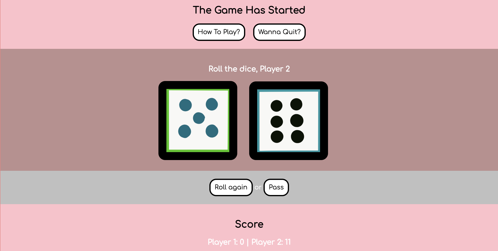
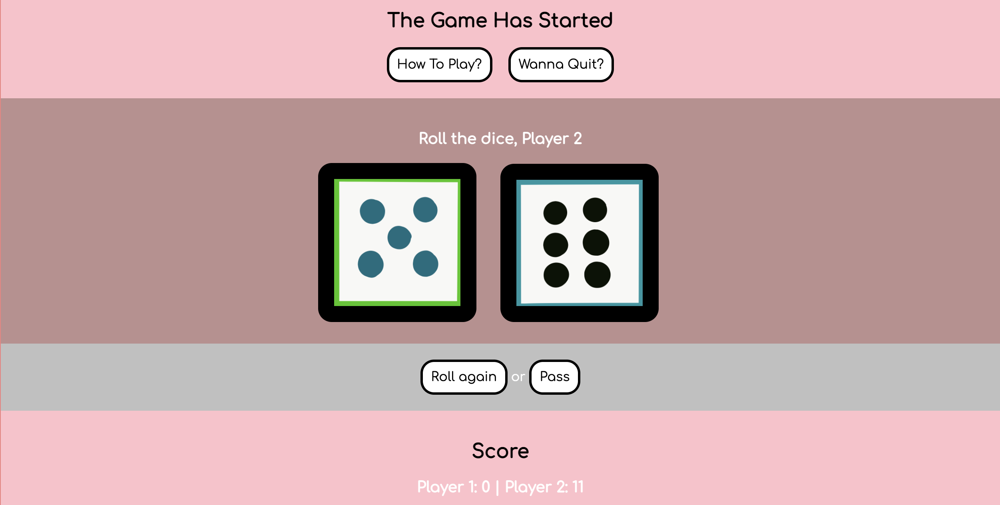

Project Summary:
Game On! is a dice game of 2 players who's first to gain 30 points win with beautifully designed interface and a user-friendly experience.
Game On! is a dice game of 2 players who's first to gain 30 points win with beautifully designed interface and a user-friendly experience.
Alphaputt is a visually interactive and fun website to browse through. The design interface makes up of a bunch of sections but within each section, there are multiple layers of interaction the users to play around with. I especially like the design where the screen is split in half and the user could click on either side of the screen to view the next page. This is something I plan to incorporate with my final project for Game On! on the player screen. In addition, the buttons on the site are well designed in that when you hover over it the animation is really fun. I think the color scheme of the website really screams "game" which works well as inspiration for my game. You can check out the website here.
Another gaming website I found is called HeraclosGame. This is one of the funniest websites I've ever visit because of how the design interface and overall graphics visually invited the user to explore. One thing I plan to possibly incorporate in my final version of Game On is the animations included in Heraclos. In addition, the decorative/ graphical buttons when the boarding screen appears, it's very pleasing and cohesive to the game element/ theme. One thing I plan to change/add to in my new version of the game is to create a different kind of game style but it will still stick to the concept of the Game of Pig. You can check out the website here.
My project goals for the final version of Game On! is to develop a cohesive theme branding and color for the game which included designing the interface and user experience. I plan to add animations like graphics and interactive buttons. Two, create input fields like the player names to make them more personalized to the user. Three, develop a split screening page during the gameplay mode. Some of the similar things I plan to use from the two websites above are the split screening interface design, animated graphics, and custom buttons. I also want to include some sort of user experience flow to guide users to a certain action.
The overall design look is very simplistic and minimal. There will be a lot of whitespaces used to encourage users to want to play the game instead of feeling overwhelmed by the text. Considering how people don't spend even a minute on one time and have a short attention span this concept should help with that. The color will still be the same but I will explore more color variation to make the game look more like a game. The game will give off an old-school race car website vibe because of how simple the interface will be but have a twist of modern vibe to it.
Interaction roles on the website will include time-based behaviors, animations using transitions and transform, hovers, and sounds. Most of the interaction will come from the graphics I plan to included possibly and the buttons. I think sounds play a big role in the gaming experience so I want to include a sound theme throughout the game that isn't developed in the current version of the game. Right now I already have a good design interface regarding the button elements but I want to see what I can make of it later on in the process. In addition to buttons, developing forms like the inputs and outputs will help to make the user experience a lot better.
The intended goal for the user experience is to have fun going through the game and as a result inclining them to want to introduce it to their friends and family. I really care about how the user reacts and experiences what they're looking at so user experience is definitely an important part of web designing. The game will be user-friendly and easy for them to narrate through the website as the whole interface design will guide users to take certain actions without them struggling to figure out where to go and what to click. I plan to achieve this by creating a very seamless interface design where users will be able to click on one button and it will take them to the next flow.